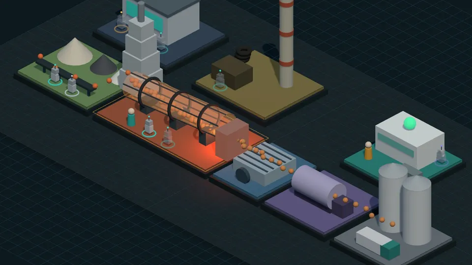

공장 하나를 구역 · 데이터 · AI 에이전트 · 사람 · 규칙으로 정의하고, 그 위에서 AI가 제안하고 사람이 승인하는 흐름을 3D로 봅니다.

원료·배합 → 가마(소성) → 냉각 → 분쇄 → 출하. 가마의 37분 지연, 병목, 결정 기록, 28일 품질 예측.
프레스 → 용접 → 도장 → 조립 → 검사
절단 → 가공 → 용접 → 도장 → 출하
원료 → 반응 → 분리 → 정제 → 저장
용해 → 주조 → 압연 → 열처리 → 검사
혼합 → 소성 → 분쇄 → 코팅 → 포장
설계 → 가공 → 조립 → 시운전 → 출하
| 구역 | 공정 단계마다 병목 5신호 — 처리 능력 · 가동률 · 재공재고 · 불량률 · 교체시간 |
| 데이터 | 강의 실습 데이터의 열을 구역에 연결 |
| AI 에이전트 | 규칙 · 머신러닝 · 딥러닝 · 생성형 AI — 할 수 있는 일과 막힌 일이 정해져 있음 |
| 사람 | 결정 의자 — 누가 무엇을 승인하는가 |
| 규칙 | 예: 단가표는 사람만 고친다 · AI의 답은 제안이다 · 미래 정보 금지 |